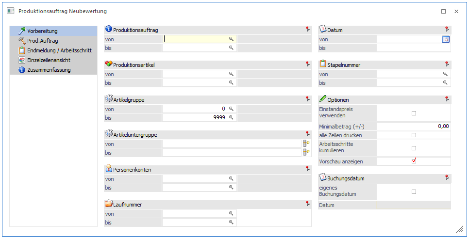
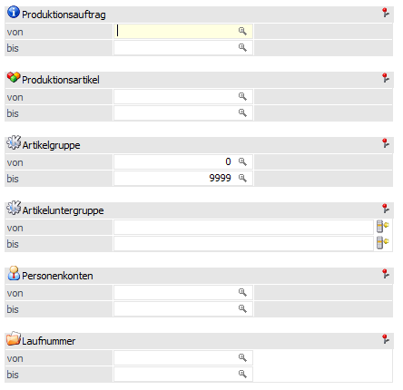
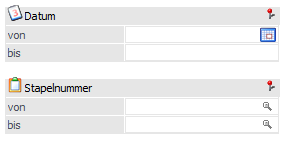
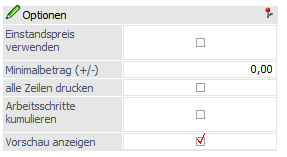
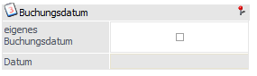

In diesem Fenster können Produktionsartikel neubewertet werden. Es werden Korrekturbuchungen für Fertig- bzw. Halbfertigartikel, um den Lagerwert neu zu bewerten. Dies kann erwünscht sein, wenn beispielsweise Versandkosten bei einem schon verbauten Stücklistenteil nach der Endmeldung verbucht werden, die doch in den schon produzierten Fertigartikel berücksichtigt werden sollen.
Hinweis:
In der Lagerneubewertung in der WinLine FAKT können in der Regel nur Rohstoffartikel neubewertet werden. Das verbaute Stücklistenteil im obigen Beispiel muss nach dem Verbuchen der Versandkosten mit der Lagerneubewertung bearbeitet werden. Somit wird der Einstandspreis des Teils entsprechend angepasst. Nachher kann dann ein Produktionsauftrag Neubewertung für den Produktionsauftrag durchgeführt werden, um die Lagerzubuchungen für den Fertigartikel (bzw. auch ggf. Halbfertigartikel) neu zu bewerten.

Vorbereitung
In diesem Schritt wird der Produktionsauftrag (bzw. die Produktionsaufträge) selektiert, die neubewertet werden sollen.
Selektion

Ø Produktionsauftrag von/bis
Eingabe aus welchem Projektbereich gewählt werden soll. Wird eine Projektnummer eingegeben, dann wird neben dem Eingabefeld der Artikel angezeigt, der produziert werden soll. Durch einen Klick auf den Artikel wird ein "Drill-Down" durchgeführt. Über die rechte Maustaste kann eingestellt werden, welche Aktion dabei ausgeführt werden soll, wobei die letzte Aktion gemerkt wird. D.h. wenn das nächste Mal mit der linken Maustaste auf den Link geklickt wird, wird die letzte Aktion wieder ausgeführt.
Ø Produktionsartikel von / bis
Eingrenzung der Artikel die bei der Neubewertung berücksichtigt werden sollen.
Ø Artikelgruppe von / bis
In diesen Feldern kann nach den Artikelgruppen eingeschränkt werden, welche in der Neubewertung berücksichtigt werden sollen.
Ø Artikeluntergruppe von / bis
In diesen Feldern kann nach den Artikeluntergruppen eingeschränkt werden, welche in der Neubewertung berücksichtigt werden sollen.
Ø Personenkonten von / bis
Selektion auf das Personenkonto welches beim Produktionsauftrag hinterlegt ist.
Ø Laufnummer von / bis
Selektion auf die Laufnummer die beim Produktionsauftrag hinterlegt ist.
Selektion

Ø Datum von / bis
Beim Datum ist das Datum der Endmeldung gemeint.
Ø Stapelnummer von / bis
Hier kann auch bestimmten Stapelnummer eingegrenzt werden, um wiederum die Produktionsaufträge zu selektieren, die der jeweiligen Stapelnummer zugewiesen sind.
Option

Ø Einstandspreis verwenden
Wenn die Option deaktiviert ist (Standardeinstellung), werden die Einzelpreise der P-Buchungen im Artikeljournal (d.h. die damaligen "Einstandspreise") als Basis für die Neubewertung verwendet. Wenn aktiviert, wird der aktuelle Einstandspreis aus dem Artikelstamm des Stücklistenteils für die Neubewertung verwendet.
Ø Minimal betrag +/-
Mit dieser Option kann der minimale Schwellenwert eingestellt werden, unter dessen Differenzbeträge in den selektierten Produktionsaufträgen nicht berücksichtigt werden.
Ø Alle Zeilen drucken
Bei der Druckausgabe können entweder nur jene Zeilen ausgegeben werden, die über dem Schwellwert liegen oder alle Zeilen.
Ø Arbeitsschritte kumulieren
Diese Option ist bei Produktionsaufträgen anzuwenden, für die eine Materialabbuchung beim Druck des Materialentnahmescheins erfolgt ist. Solche Aufträge können ohne Aktivierung dieser Option nicht neubewertet werden. Die Checkbox bewirkt, dass alle Materialabbuchungen eines Arbeitsschrittes summiert werden und auf die Lagerzubuchungen des Arbeitsschrittes (und alle darüberliegenden Arbeitsschritte) aufgerechnet werden. Diese Summierung kann aber nur für bereits abgeschlossen Arbeitsschritte durchgeführt werden (d.h. Arbeitsschritte die schon vollständig endgemeldet sind).
Ø Vorschau anzeigen
Im Standard ist die Checkbox aktiviert. Ist diese Option "Vorschau anzeigen" nicht selektiert, wird sofort gebucht (nach einer weiteren Sicherheitsabfrage). Die selektierten Prod.Aufträge werden alphabetisch durchlaufen und es wird sofort pro Produktionsauftrag gebucht. Die Folgeschritte "Prod.Auftrag" / "Einzelansicht" etc. stehen nicht mehr zur Verfügung. Sollte die Ausgabe/Buchen abgebrochen werden, ist der Auftrag, wo das Abrechen erfolgte komplett neu bewertet worden inkl. der Buchungen oder noch nicht neu bewertet worden.
Buchungsdatum

Ø Eigenes Buchungsdatum
Generell wird das Buchungsdatum der Endmeldung für die Bewertungs-Korrekturbuchungen verwendet. Wenn diese Option aktiviert wird, kann ein eigenes Datum für die Korrekturbuchungen hinterlegt werden.
Klick auf den OK-Button bzw. die F5-Taste (bzw. mit der Maus auf einem folgenden Menüpunkt im Baummenü), um mit der Neubewertung fortzusetzen.
Prod.Auftrag
In diesem Schritt werden alle Produktionsaufträge innerhalb der Selektionsbereich angeführt, die bewertungswürdig sind. Es können Aufträge in der Tabelle markiert und in den folgenden Schritten näher analysiert werden.
Mit dem OK-Button bzw. der F5-Taste gelangt man sofort in den letzten Schritt - die Zusammenfassung.
Endmeldung/Arbeitsschritt
In diesem Schritt werden alle endgemeldete Arbeitsschritte/Endmeldungen des gewählten Auftrags angezeigt. Arbeitsschritte, die neubewertet werden können sind mit einem Symbol gekennzeichnet. Es kann einen Arbeitsschritt markiert werden, der im folgenden Schritt "Einzelzeilenansicht" näher analysiert werden kann.
Mit dem OK Button bzw. der F5-Taste gelangt man sofort in den letzten Schritt, die Zusammenfassung.
Hinweis
In der Selektion wurde auf ein Halbfertigprodukt eingegrenzt. Beim Neuberechnen wird in dem Fall der gesamte Produktionsauftrag neu berechnet und nicht der Arbeitsschritt des Halbfertigprodukts innerhalb des Produktionsauftrags.